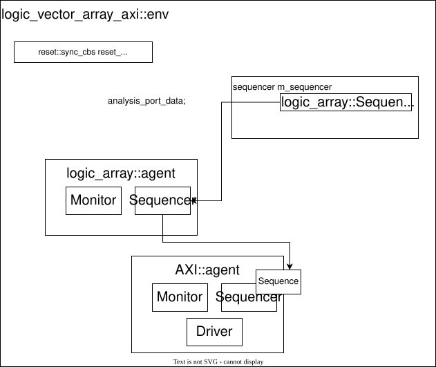

logic_vector_array_axi environment¶
This environment has one high-level logic vector array agent and it works only with data. This package contains two environments. The RX environment generates and sends data to the DUT. The TX environment generates TREADY and observes the TX interface.

The environment is configured by five parameters: For more information see AXI documentation.
DATA_WIDTH
TUSER_WIDTH
ITEM_WIDTH
ITEM_SIZE
REGIONS
Top sequencers and sequences¶
In the RX direction, there is the Logic vector array sequencer that handles the AXI TDATA and the TUSER.
In the TX direction, there is one sequencer of type axi::sequencer #(DATA_WIDTH, TUSER_WIDTH, REGIONS) which generates the TREADY signal.
Both directions have an analysis_export for logic vector array transactions.
Configuration¶
The config class has three variables.
Variable |
Description |
|---|---|
active |
Set to UVM_ACTIVE if the agent is active, otherwise set to UVM_PASSIVE. |
interface_name |
The name of the interface under which you can find it in uvm config database. |
seq_cfg |
Configure a low-level sequence that converts logic_vector_array to AXI words. |
The top level of the environment contains the reset_sync class, which is required for reset synchronization. The example shows how to connect the reset to the logic_vector_array_axi environment and its basic configuration.
class test extends uvm_test
`uvm_componet_utils(test::base)
reset::agent m_resets;
logic_vector_array_axi::env_rx#(...) m_env;
function new(string name, uvm_component parent = null);
super.new(name, parent);
endfunction
function void build_phase(uvm_phase phase);
logic_vector_array_axi::config_item m_cfg;
m_resets = reset::agent::type_id::create("m_reset", this);
m_cfg = new();
m_cfg.active = UVM_ACTIVE;
m_cfg.interface_name = "AXI_IF";
m_cfg.cfg = new();
m_cfg.cfg.space_size_set(128, 1024);
uvm_config_db#(logic_vector_array_axi_env::config_item)::set(this, "m_env", "m_config", m_cfg);
m_env = logic_vector_array_axi::env_rx#(...)::type_id::create("m_env", this);
endfunction
function void connect_phase(uvm_phase phase);
m_reset.sync_connect(m_env.reset_sync);
endfunction
endclass
Low-level sequence configuration¶
The configuration object config_sequence contains two functions.
Variable |
Type |
Description |
|---|---|---|
probability_set(min, max) |
[percentage] |
Set probability of no inframe gap, probability_set(100,100) => no inframe gap. |
space_size_set(min, max) |
[bytes] |
Set min and max space between two packets. |
RX Inner sequences¶
For the RX direction, there is one base sequence class “sequence_simple_rx_base” which simplifies the creation of other sequences. It processes the reset signal and exports the create_sequence_item virtual function. In this function, a child can create an axi::sequence_item as they like. Another important function in the “sequence_simple_rx_base” class is try_get() which gets the required data from the base array agent. It is also important to note that the base class is state-oriented. The following table describes the internal states.
State |
Description |
|---|---|
state_packet_none |
No data for a packet. |
state_packet_new |
A new packet has been read by the try_get function. |
state_packet_data |
The process is somewhere in the middle of a packet. |
state_pakcet_space |
All data are sent and a space is generated before a new packet. |
state_packet_space_new |
Randomize a new space size before the new packet. |
The environment has three sequences. All of them generate tuser and tdata signals described in the table below. In the default state, the RX env runs the sequence_lib_rx.
Sequence |
Description |
|---|---|
sequence_simple_rx |
A base random sequence. This sequence behaves very variably. |
sequence_full_speed_rx |
The sequence gets data and sends them as quicky as possible. |
sequence_stop_rx |
The sequence doesn’t send any data. Simulates no data on the interface. |
sequence_lib_rx |
Repetitively randomize and choose one of the previous sequences. |
The example below shows how to change the inner sequence to test maximum throughput. The environment runs the sequence_full_speed_rx instead of the sequence_lib_rx.
class axi_rx_speed#(...) extends logic_vector_array_axi_env::sequence_lib_rx#(...);
function new(string name = "axi_rx_speed");
super.new(name);
init_sequence_library();
endfunction
virtual function void init_sequence();
this.add_sequence(logic_vector_array_axi_env::sequence_full_speed_rx #(DATA_WIDTH, TUSER_WIDTH, REGIONS)::get_type());
endfunction
endclass
class test extends uvm_test
`uvm_componet_utils(test::base)
logic_vector_array_axi::env_rx#(...) m_env;
function new(string name, uvm_component parent = null);
super.new(name, parent);
endfunction
function void build_phase(uvm_phase phase);
...
logic_vector_array_axi_env::sequence_lib_rx#(...)::type_id::set_inst_override(axi_rx_speed#(...)::get_type(),
{this.get_full_name(), ".m_env.*"});
m_env = logic_vector_array_axi::env_rx#(...)::type_id::create("m_env", this);
endfunction
endclass